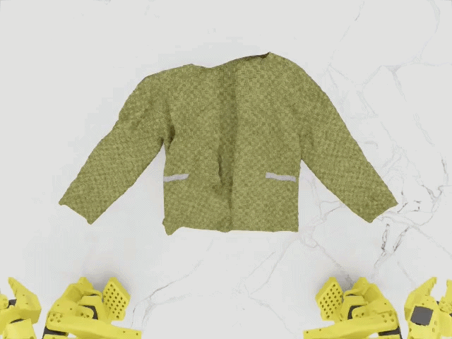
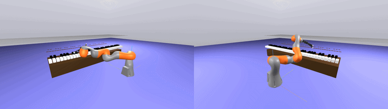
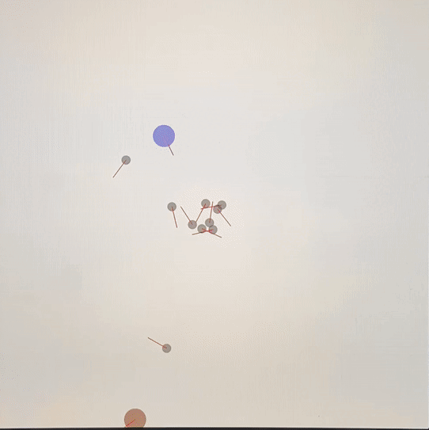
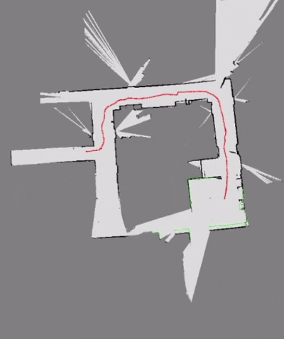
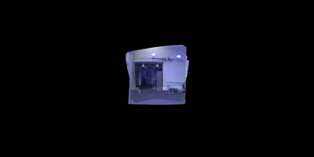

Senior Autonomous Driving Software Engineer
Mercedes-Benz · Shanghai, China
Jan 2023 — Present
Senior Autonomous Driving Software Engineer, Mercedes-Benz
I am a senior autonomous driving software engineer at Mercedes-Benz. Prior to that, I was a graduate student at the GRASP Laboratory, University of Pennsylvania.
At Penn, I worked on DCIST, a project focused on multi-agent and heterogeneous systems, supervised by Prof. Vijay Kumar and Dr. Siddharth Mayya.
My interests lie in embodied intelligence, micro unmanned aerial vehicles, robot perception, and learning. Much of my work focuses on making algorithms safe, agile, and reliable on real robotic platforms.

MEAM 620: Advanced Robotics (Fall 2021)
UPenn Alumni Interviewer



Trajectory generation and control algorithms for a quadrotor flying aggressive maneuvers.

Maximum-speed path and velocity-profile generation using CMA-ES, pure-pursuit control, and obstacle avoidance with ODG-PFM and RRT*.

Controller improvements, test-environment development, and topology-similarity analysis for a reconfigurable modular robot platform.

Car dynamics and MPC-based human decision models integrated into a multi-agent environment, with robot agents trained using MADDPG and human agents modeled through social forces.

2D occupancy-grid mapping and localization using laser scans, IMU, and odometry, extended with Kinect imagery to build a textured map.

A Kalman filter estimates 3D orientation from IMU data, calibrated against Vicon ground truth, to generate real-time panoramas.

Object instance segmentation experiments using the Mask R-CNN framework.

Clipped Proximal Policy Optimization applied to OpenAI Gym's CarRacing environment.

A generative adversarial network that reconstructs high-resolution images from downsampled inputs.

A YOLO v1 implementation for detecting objects in street-scene images.

A Gaussian mixture model detects barrels in images and estimates their positions in world coordinates.

A heatmap-based neural network estimates object keypoints and recovers an oilcan's pose from images.
Homography estimation maps video frames onto logo points for stable planar augmentation.

A scale-space feature detector approximating the Laplacian of Gaussian with Difference of Gaussians.

An actor–critic neural network trained to control the OpenAI Gym Acrobot environment.